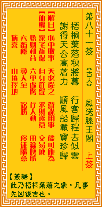

观音灵签第八十一签 【风送滕王阁】 |
 | |||
庭前叶落暮秋时 行客奔程亦若飞 谢得天公轻著力 顺风相送宝船归 |
||||
| 【吉凶】 | 中中签 | 【宫位】 | 未宫 | |
| 【签语】 | 此卦梧桐落叶之象，凡事先凶后吉也。 | |||
| 【解曰】 | 心中取事 天必从之 营谋用事 尽可施为 | |||
| 【仙机】 | 此签家宅祈保，自身许经，求财遂意，交易成，婚姻和合，六甲虚惊，行人动，田蚕晚胜，六畜稳，寻人至，讼胜，移徙随意，病喜，山 坟择地。 | |||
| 【详解】 | 秋天即将结束，庭院前树上的叶子纷纷飘落了下来，出门在外的游子归心似箭;感谢上苍暗中轻轻使了助力，借着顺风让我和满载的行囊更加速返乡。 心中所望，天必从之，所谋用事，尽可施为。此签从心所望之象，凡事大吉利。 本签也。从心所望之象也。凡事大吉利者。一叶如秋后。逐渐有机缘。行客之来势如飞奔。风送君尔之船。只要轻轻着力。尔船即将宝藏船舶推送回来。不必费力 者。此者非人力之所逮。易言之。心中所望天必从之所谋用事尽可施为。 此签有”谋事在人”之意。意味当事人，凡事勿太悲观。人在面对艰难或遥不可及的任务时，第一个冒出的念头往往是”不可能”。其实”不可能”是一个消极且 较没有自信的想法，当我们先入为主的就认定某件事”不可能”时，通常也等于间接否定了自己。然而世事本就难以预料，所以又怎么能肯定，有些事情是绝对不 会发生的呢?与其一开始就觉得”不可能”、”做不到”，还不如保持积极乐观的态度，试着踏出第一步，先不要预设太多立场。接下来，也许会有意想不到的成 果与收获呢! | |||
| 【典故】 | 唐朝咸淳二年，南昌县长阎伯屿重修腾王阁，定了九月九日设宴请客，并邀请天下名士出席宴会，目的要他女婿写一篇序文，以出风头， 时王勃（唐初四杰之一）知道了，要去凑热闹，可是到南昌行程七百里，需时三天，此时已是九月初七日，赶不上了。是夜，王勃梦见水神对他说一句话：“送君一帆”，次日王 勃扬帆过江，舟行飞快，风送七百里路程，王勃及时赶到南昌，在会上写了千古绝妙的《腾王阁序》。风送腾王阁，时来运到的意思。 | |||